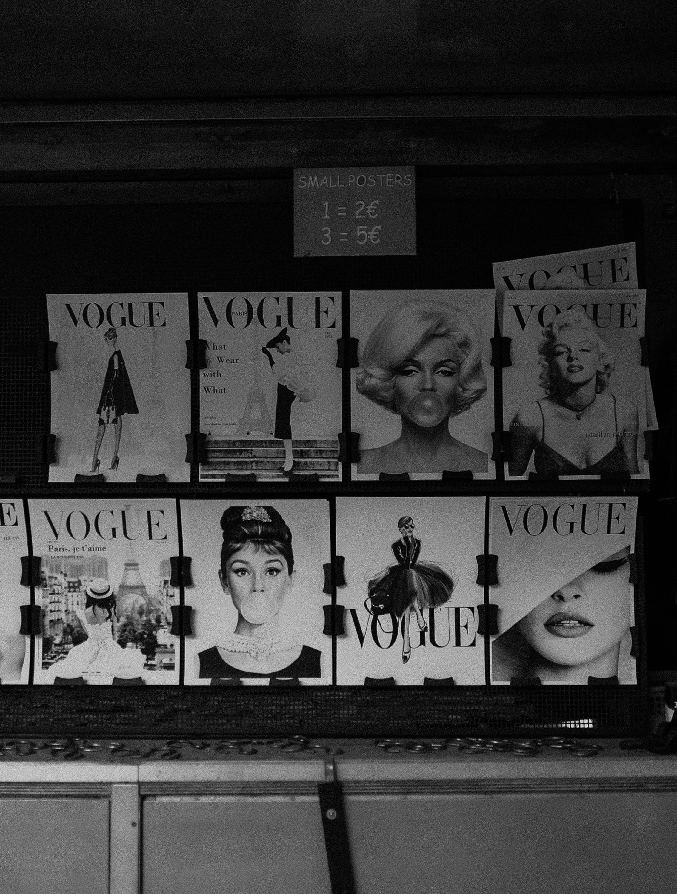

About the Community
Who this website is for
This site is designed for young creatives who are interested in fashion, branding, digital design, and building their own website in the future.
The main audience for this site is college-aged students and beginner creatives who care about visual design but are still learning about the planning side of website creation. Many people in this group may want to create a portfolio, small brand site, or online store someday. They usually want a site that feels stylish, clear, and easy to use.
One persona for this site is a student designer who pays attention to branding and online presentation but does not yet know how UX strategy and scope shape a successful website. She wants practical guidance, examples, and ideas she can actually use when planning her own future project.
